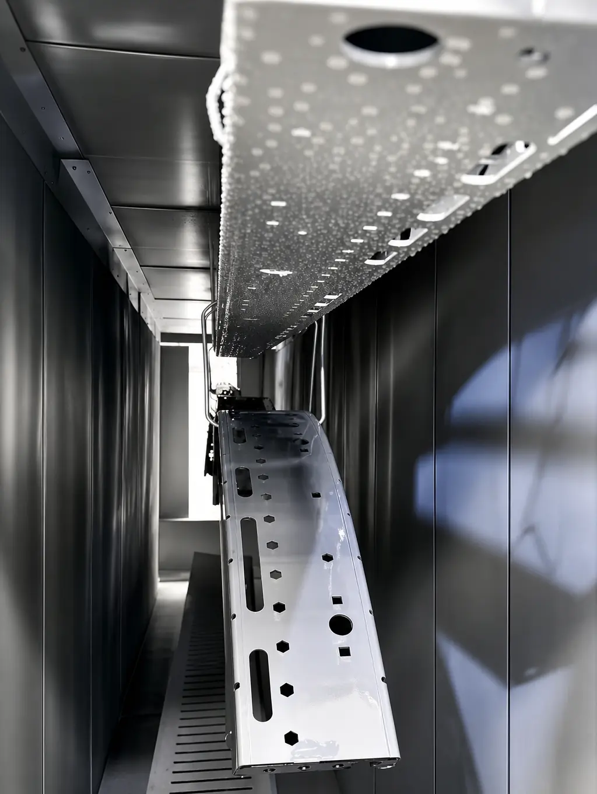

La pintura electrostática para aluminio es perfectamente posible y muy común, pero el aluminio no se trata como el acero. Su capa natural de óxido exige una preparación propia antes de pintar, y de ella depende que el polvo adhiera y dure.
En esta guía te explicamos qué hace distinto al aluminio, qué defectos aparecen con más frecuencia y qué debes definir antes de cotizar. Si necesitas el panorama de todos los metales, empieza por pintura en polvo para metal.
En Steel Paint procesamos piezas ferrosas y no ferrosas. Para una pieza de aluminio confirmamos la factibilidad y el proceso al cotizar, y te lo contamos aquí desde lo general de la industria. Para conocer la tecnología base, consulta qué es la pintura electrostática.
¿Se puede pintar aluminio con pintura electrostática?
Sí. El aluminio conduce la electricidad y aguanta el horno, que son las dos condiciones del proceso. Se pinta en perfiles, carcasas, piezas fundidas y lámina, y su acabado en polvo es habitual en arquitectura, equipo y mobiliario.
También lo verás escrito como pintura en polvo para aluminio o pintura electroestatica aluminio, sin acento. Es la misma tecnología, aplicada a un metal que pide atención especial.
Por qué el aluminio es distinto del acero
- Capa de óxido natural: el aluminio no se oxida como el acero, pero forma una película de óxido que debe tratarse para que el polvo se ancle
- Corrosión distinta: si falla la preparación, puede aparecer corrosión que avanza por debajo de la pintura en forma de hilos, algo que se ve poco en acero
- Conducción del calor: el aluminio se calienta y se enfría rápido, por lo que el curado debe ajustarse a la masa y al espesor de cada pieza
- Contacto eléctrico: la capa de óxido aísla, así que los puntos de sujeción deben asegurar buen contacto a tierra
Por eso la preparación pesa tanto. El principio general lo explicamos en preparación de superficie para powder coating.
Qué pide el aluminio antes de pintarse (en general)
Como regla de la industria, el aluminio requiere una limpieza profunda para quitar grasas y aceites de fabricación, un tratamiento que retire o modifique el óxido y un tratamiento de conversión que prepare la superficie para anclar el polvo. Después se enjuaga y se seca bien antes de pintar.
Los productos y las etapas concretas varían entre procesos, y los define cada maquilador según la pieza y el uso final. Por eso, al comparar proveedores, pregunta cómo preparan el aluminio; la guía de cómo elegir un maquilador de pintura en polvo en Monterrey te da criterios para hacerlo.
Aluminio soldado y ensamblado con otros metales
Las soldaduras en aluminio pueden dejar residuos y zonas con óxido que se limpian distinto del resto de la pieza, y conviene revisarlas antes del pintado. Si además el ensamble une aluminio con tornillería o piezas de otro metal, el contacto entre metales distintos puede favorecer la corrosión en presencia de humedad.
Por eso es mejor pintar las piezas antes de ensamblarlas cuando sea posible, y definir qué metal toca a cuál. Así el acabado cubre también las zonas de unión y el maquilador puede tratar cada material según corresponde.
Tipos de aluminio y qué cambia en cada uno
| Tipo | Uso común | Qué cuidar |
|---|---|---|
| Perfil extruido | Ventanas, marcos, estructuras | Acabado parejo en toda la longitud |
| Fundición | Carcasas, soportes, herrajes | Poros que dejan burbujas al hornear |
| Lámina | Gabinetes, paneles, tapas | Marcas de manejo y deformación |
| Anodizado | Piezas con tratamiento previo | Adherencia sobre la capa anodizada |
Aluminio fundido: el caso que más cuidado pide
Las piezas fundidas suelen tener pequeños poros internos donde queda aire o gases. Al calentarse en el horno, esos gases salen por la superficie y dejan burbujas o puntos en la película de pintura.
Por eso conviene avisar al maquilador desde la cotización si la pieza es fundición, para que se ajuste el manejo antes de aplicar. También ayuda que el proveedor de la pieza controle la porosidad, porque no hay pintura que compense un metal defectuoso.
Defectos comunes al pintar aluminio y cómo se previenen
- Burbujas y poros en fundición: el aire atrapado en el metal sale al hornear y marca la película; se previene con un manejo adecuado de la pieza antes de aplicar
- Pérdida de adherencia: casi siempre viene de una limpieza o conversión insuficiente, no del polvo
- Marcas de gancho o contacto: se acuerdan con tu maquilador desde la cotización, para decidir en qué zonas pueden quedar
- Cambios de tono entre piezas: se evitan manteniendo el mismo polvo y validando con una muestra, como en colores de pintura electrostática y carta RAL
Aluminio en exterior: la resina y las normas
En arquitectura y exterior, el aluminio pintado se evalúa con especificaciones como la AAMA 2603, 2604 y 2605, que clasifican el desempeño de los recubrimientos sobre aluminio arquitectónico. Estas normas sirven de referencia, pero los resultados dependen del polvo y del proceso de cada proveedor.
Para exterior se parte de un polvo formulado para intemperie; revisa las diferencias entre resinas en tipos de pintura en polvo.
Dónde se pinta aluminio en el noreste
En Nuevo León el aluminio aparece sobre todo en construcción y arquitectura metálica (perfiles, marcos y fachadas), en gabinetes y componentes de HVAC y refrigeración, en autopartes y en mobiliario. Si tu pieza combina acero y aluminio en un mismo ensamble, define el proceso desde el inicio, porque cada metal pide una preparación distinta.
Errores comunes al mandar aluminio a pintar
- Tratarlo como acero y esperar la misma adherencia sin una preparación propia.
- No avisar que la pieza es fundición o que ya tiene un tratamiento previo, como el anodizado.
- Dejar aceites, huellas o residuos de maquinado en la superficie antes del envío.
- Ignorar los puntos de contacto eléctrico en los ganchos, donde puede quedar una marca sin pintura.
- Elegir un polvo de interior para una pieza que irá en fachada o exterior.
Qué información pedirá tu maquilador
Para confirmar la factibilidad y cotizar una pieza de aluminio, ten a la mano:
- Tipo de pieza: perfil extruido, fundición o lámina.
- Aleación o ficha del material, si la tienes.
- Si trae anodizado, conversión o algún tratamiento previo.
- Uso final: interior, exterior o fachada.
- Color, brillo, textura y, si aplica, la especificación de tu cliente.
- Medidas, cantidad y zonas que no deben pintarse.
Ejemplos por situación
- Perfiles para ventanas o fachadas: se piensa en resina para exterior y en normas arquitectónicas como la AAMA, además de un acabado parejo en toda la longitud.
- Carcasa o soporte fundido: la porosidad es el riesgo principal; se avisa desde la cotización.
- Gabinete de lámina de aluminio para interior: pesan el aspecto, la tolerancia de ensamble y el color.
- Pieza con anodizado previo: se consulta con el maquilador y con el fabricante del polvo antes de procesar.
Preguntas frecuentes sobre pintura electrostática para aluminio
¿Se puede pintar aluminio con pintura electrostática?
Sí. El aluminio conduce la electricidad y soporta el horneado, por lo que se pinta con pintura en polvo. Lo que cambia respecto al acero es la preparación de la superficie, que debe ser específica para este metal.
¿Por qué se despinta el aluminio?
La causa más común es una preparación inadecuada: el aluminio forma una capa de óxido natural que, si no se trata correctamente, impide que el polvo adhiera bien. También influyen la limpieza deficiente y el uso de un polvo que no corresponde al ambiente.
¿El aluminio necesita pretratamiento antes de pintarse?
Sí. Aunque no se oxida como el acero, requiere limpieza y un tratamiento de superficie propio para anclar la pintura y resistir la corrosión. El proceso exacto lo define cada maquilador según la pieza y el uso final.
¿Se puede pintar aluminio anodizado con pintura en polvo?
Es posible, pero es un caso especial: la capa anodizada cambia la superficie y la adherencia. Conviene consultarlo con el maquilador y con el fabricante del polvo antes de procesar.
¿La pintura electrostática sobre aluminio sirve para exterior?
Sí, con un polvo formulado para intemperie y una buena preparación. En arquitectura se usan especificaciones como AAMA 2604 para evaluar el desempeño del recubrimiento sobre aluminio.
Lo que debes definir antes de enviar tu aluminio
Con aluminio, la información de la pieza vale tanto como el polvo. Define qué tipo de aluminio es (perfil, fundición o lámina), si tiene algún tratamiento previo, dónde se usará y qué acabado esperas. Con esos datos, un maquilador puede confirmar la factibilidad y decirte con claridad qué debe cuidarse antes de procesar el lote.